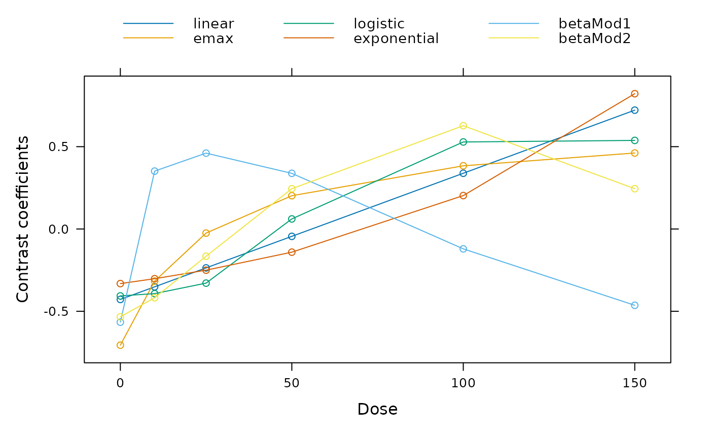

This function calculates a contrast vectors that are optimal for detecting certain alternatives. The contrast is optimal in the sense of maximizing the non-centrality parameter of the underlying contrast test statistic: $$\frac{c'\mu}{\sqrt{c'Sc}}$$ Here \(\mu\) is the mean vector under the alternative and \(S\) the covariance matrix associated with the estimate of \(\mu\). The optimal contrast is given by $$c^{opt} \propto S^{-1}\left(\mu - \frac{\mu^{\prime}S^{-1}1} {1^\prime S^{-1} 1}\right),$$ see Pinheiro et al. (2014).
Arguments
- models
An object of class Mods defining the dose-response shapes for which to calculate optimal contrasts.
- doses
Optional argument. If this argument is missing the doses attribute in the Mods object specified in models is used.
- w, S
Arguments determining the matrix S used in the formula for the optimal contrasts. Exactly one of w and S has to be specified. Note that w and S only have to be specified up to proportionality
- w
Vector specifying weights for the different doses, in the formula for calculation of the optimal contrasts. Specifying a weights vector is equivalent to specifying S=diag(1/w) (e.g. in a homoscedastic case with unequal sample sizes, w should be proportional to the group sample sizes).
- S
Directly specify a matrix proportional to the covariance matrix to use.
- placAdj
Logical determining, whether the contrasts should be applied to placebo-adjusted estimates. If yes the returned coefficients are no longer contrasts (i.e. do not sum to 0). However, the result of multiplying of this "contrast" matrix with the placebo adjusted estimates, will give the same results as multiplying the original contrast matrix to the unadjusted estimates.
- type
For type = "constrained" the contrast coefficients of the zero dose group are constrained to be different from the coefficients of the active treatment groups. So that a weighted sum of the active treatments is compared against the zero dose group. For an increasing trend the coefficient of the zero dose group is negative and all other coefficients have to be positive (for a decreasing trend the other way round).
- x, superpose, xlab, ylab, plotType
Arguments for the plot method for optContr objects. plotType determines, whether the contrasts or the underlying (standardized) mean matrix should be plotted.
- ...
Additional arguments for plot method
- optContrObj
For function plotContr the optContrObj should contain an object of class optContr.
Value
Object of class optContr. A list containing entries contMat and muMat (i.e. contrast, mean and correlation matrix).
Details
Note that the directionality (i.e. whether in "increase" in the response
variable is beneficial or a "decrease", is inferred from the specified
models object, see Mods for details).
Constrained contrasts (type = "constrained") add the additional constraint in the optimization that the sign of the contrast coefficient for control and active treatments need to be different. The quadratic programming algorithm from the quadprog package is used to calculate the contrasts.
References
Bretz, F., Pinheiro, J. C., and Branson, M. (2005), Combining multiple comparisons and modeling techniques in dose-response studies, Biometrics, 61, 738–748
Pinheiro, J. C., Bornkamp, B., Glimm, E. and Bretz, F. (2014) Model-based dose finding under model uncertainty using general parametric models, Statistics in Medicine, 33, 1646–1661
Examples
doses <- c(0,10,25,50,100,150)
models <- Mods(linear = NULL, emax = 25,
logistic = c(50, 10.88111), exponential= 85,
betaMod=rbind(c(0.33,2.31), c(1.39,1.39)),
doses = doses, addArgs = list(scal = 200))
contMat <- optContr(models, w = rep(50,6))
plot(contMat)

plotContr(contMat) # display contrasts using ggplot2
## now we would like the "contrasts" for placebo adjusted estimates
dosPlac <- doses[-1]
## matrix proportional to cov-matrix of plac. adj. estimates for balanced data
S <- diag(5)+matrix(1, 5,5)
## note that we explicitly hand over the doses here
contMat0 <- optContr(models, doses=dosPlac, S = S, placAdj = TRUE)
## -> contMat0 is no longer a contrast matrix (columns do not sum to 0)
colSums(contMat0$contMat)
#> linear emax logistic exponential betaMod1 betaMod2
#> 0.4735130 0.9961621 0.4448535 0.3515726 0.6868100 0.6305744
## calculate contrast matrix for unadjusted estimates from this matrix
## (should be same as above)
aux <- rbind(-colSums(contMat0$contMat), contMat0$contMat)
t(t(aux)/sqrt(colSums(aux^2))) ## compare to contMat$contMat
#> linear emax logistic exponential betaMod1 betaMod2
#> -0.42795997 -0.70574595 -0.40645053 -0.3316718 -0.5661425 -0.5333855
#> 10 -0.35131042 -0.31666702 -0.39242821 -0.3019187 0.3515776 -0.4179871
#> 25 -0.23633610 -0.02485782 -0.32885490 -0.2501813 0.4607560 -0.1655178
#> 50 -0.04471224 0.20210489 0.06107771 -0.1408259 0.3379656 0.2447717
#> 100 0.33853550 0.38367506 0.52860594 0.2028509 -0.1207023 0.6273470
#> 150 0.72178323 0.46149085 0.53804999 0.8217468 -0.4634544 0.2447717
## now calculate constrained contrasts
if(requireNamespace("quadprog", quietly = TRUE)){
optContr(models, w = rep(50,6), type = "constrained")
optContr(models, doses=dosPlac, S = S, placAdj = TRUE,
type = "constrained")
}
#> Optimal contrasts
#> linear emax logistic exponential betaMod1 betaMod2
#> 10 0.000 0.000 0.000 0 0.487 0.000
#> 25 0.000 0.000 0.000 0 0.746 0.000
#> 50 0.000 0.236 0.000 0 0.455 0.197
#> 100 0.243 0.604 0.696 0 0.000 0.960
#> 150 0.970 0.761 0.718 1 0.000 0.197